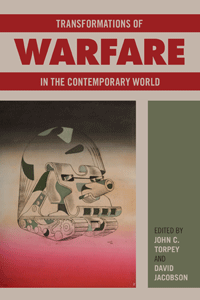

<body bgcolor="#FFFFFF" text="#000000" link="#0000FF" vlink="#CC0000" alink="#CC0000"><center><hr width="350" size="1" align="center" noshade><p>
<i>Essays that explore some of the profound changes taking place in the realm of warfighting today</i>
<br><hr width="350" size="1" align="center" noshade><p><a href="https://cdcshoppingcart.uchicago.edu/Cart/ChicagoBook.aspx?ISBN=&&PRESS=temple" target="_top">Buy this book!</a> | <a href="https://cdcshoppingcart.uchicago.edu/Cart/Cart.aspx?PRESS=temple" target="_top">View Cart</a> | <a href="https://cdcshoppingcart.uchicago.edu/Cart/Cart.aspx?PRESS=temple" target="_top">Check Out</a></p><p></p></center><!--none//--><h1>Transformations of Warfare in the Contemporary World</h1>
<H2>_______________</H2>
<h3>Edited by John Torpey and David Jacobson</h3>
paper: $28.95, Jun 16<BR>EAN:&nbsp;978-1-4399-1313-0<BR><font color=#990033>Not Yet Published Preorder</FONT><font size=-7><br>&nbsp;</font></p><p class="info">cloth: $99.50, <BR>EAN:&nbsp;978-1-4399-1312-3<BR><font color=#990033>Not Yet Published Preorder</FONT><font size=-7><br>&nbsp;</font></p><p class="info">e-book: $28.95, <BR>EAN:&nbsp;978-1-4399-1314-7<BR><font color=#990033>Not Yet Published Preorder</FONT><font size=-7><br>&nbsp;</font></p></p></td></tr></table>
<BR> <p class="info">192 pp<BR> 5.5 x 8.25<BR> <p class="info"><font size=-7>&nbsp;</font></p><p class="info">
</P><BLOCKQUOTE></BLOCKQUOTE>
<p>
Today’s warfare has moved away from being an event between massed national populations and toward small numbers of combatants using high-tech weaponry. The editors of and contributors to the timely collection <i>Transformations of Warfare in the Contemporary World </i>show that this shift reflects changes in the technological, strategic, ideological, and ethical realms.<br>
<p>The essays in this volume discuss
<br />&middot;&#9;the waning connection between citizenship and soldiering;
<br />&middot;&#9;the shift toward more reconstructive than destructive activities by militaries;
<br />&middot;&#9;the ethics of irregular or asymmetrical warfare;
<br />&middot;&#9;the role of novel techniques of identification in military settings;
<br />&middot;&#9;the stress on precision associated with targeted killings and kidnappings;
<br />&middot;&#9;the uses of the social sciences in contemporary warfare. <br>
<p>In his concluding remarks, David Jacobson explores the extent to which the contemporary transformation of warfare is a product of a shift in the character of the combatants themselves.
<br />
<br /><i>Contributors include: Ariel Colonomos, Roberto J. González, Travis R. Hall, Saskia Hooiveld, Rob Johnson, Colonel C. Anthony Pfaff, Ian Roxborough, and the editors</i>
<br>
<P CLASS="top"><A HREF="#top">BACK TO TOP</A></P>&nbsp;
<BR>&nbsp;
&nbsp;<P>
</P><BR>&nbsp;
<H2>About the Author(s)</H2><p>
<b>John C. Torpey</b> is Director of the Ralph Bunche Institute for International Studies at the Graduate Center, City University of New York, and author of <i>Making Whole What Has Been Smashed: On Reparations Politics</i> and <i>The Invention of the Passport: Surveillance, Citizenship, and the State</i>.
<br>
<p>
<b>David Jacobson</b> is the Founding Director of the Global Initiative on Civil Society and Conflict at the University of South Florida, and author of both <i>Of Virgins and Martyrs: Women and Sexuality in Global Conflict </i>and <i>Rights Across Borders: Immigration and the Decline of Citizenship.</i>
<br>
<P CLASS="top"><A HREF="#top">BACK TO TOP</A></P>
<p><h2>Subject Categories</h2><A HREF="/tempress/sociology.html" TARGET="_top">Sociology</a><BR><A HREF="/tempress/political.html" TARGET="_top">Political Science and Public Policy</a><BR><A HREF="/tempress/philosophy.html" TARGET="_top">Philosophy and Ethics</a>
</p>
<P><I><a href="http://www.temple.edu/tempress/phsc.html" onMouseOver="window.status='Click for other books in this series!'; return true;" onMouseOut="window.status="; return true;" target="_top”><p>
Politics, History, and Social Change
<br>
</p><p>
This series will disseminate serious works that analyze the social changes that have transformed our world during the twentieth century and beyond. The main topics to be addressed include international migration; human rights; the political uses of history; the past and future of the nation-state; decolonization and the legacy of imperialism; and global inequality. The series will also translate into English outstanding works by scholars writing in other languages.
<br />
<br></p>
<p align="center"><a href="https://cdcshoppingcart.uchicago.edu/Cart/ChicagoBook.aspx?ISBN=&&PRESS=temple" target="_top">Buy this book!</a> | <a href="https://cdcshoppingcart.uchicago.edu/Cart/Cart.aspx?PRESS=temple" target="_top">View Cart</a> | <a href="https://cdcshoppingcart.uchicago.edu/Cart/Cart.aspx?PRESS=temple" target="_top">Check Out</a></p><p><font face="Arial" size="1"><a href="copyright.html" onMouseOver="window.status='Web Copyright Policy';return true;" onMouseOut="window.status=''" title="Web Copyright Policy">&copy;</a> <a href="http://www.temple.edu" target="new" onMouseOver="window.status='Link to Temple University home page';return true;" onMouseOut="window.status=''" title="Link to Temple University home page">Temple University</a>. All Rights Reserved. http://www.temple.edu/tempress/titles/2385_reg.html</font></p>